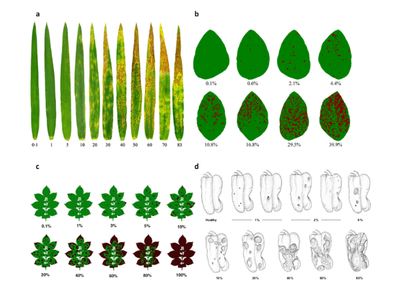

5 Standard area diagrams
This is a work in progress that is currently undergoing heavy technical editing and copy-editing
5.1 Definitions
According to a glossary on phytopathometry (Bock et al. 2021), standard area diagram is “a generic term for a pictorial or graphic representation (drawing or true-color photo) of selected disease severities on plants or plant parts (leaves, fruit, flowers, etc.) generally used as an aid for more accurate visual estimation (on the percentage scale) or classification (using an ordinal scale) of severity on a specimen. Standard area diagram sets, commonly abbreviated to SADs, are usually presented as a set of diagrams for interpolation using the percentage scale”.
The SADs, also known as diagrammatic scales, have long use in plant pathology, dating back to the late 1800s, when the Cobb scale was developed with five diagrams illustrating a range of severities of rust pustules on wheat leaves. During the 1940s, the Cobb scale was modified by Peterson (1948) to account for various symptoms size. The proposed system, in black and white, presented two ways of rating, using the percent scale (0.37 to 37%) or an ordinal score from 1 to 100.

Modern SADs have been designed using colors in numbers of two to thousands (true-color). An example of SAD are shown.

5.2 Best practices for SAD development
A systematic review of the literature on SADs highlighted the most important aspects related with the development and validation of the tool (Del Ponte et al. 2017). A list of best practices was proposed in that review to guide future research in the area. Follows the most important aspects to be noted:
Sample a minimum number (e.g., n = 100) of specimens from natural epidemics representing the range of disease severity and typical symptoms observed.
Use reliable image analysis software to discriminate disease symptoms from healthy areas to calculate percent area affected.
When designing the illustrations for the SAD set, ensure that the individual diagrams are prepared realistically, whether line drawn, actual photos, or computer generated.
The number of diagrams should be no less than 6 and no more than 10, distributed approximately linearly, and spaced no more than 15% apart. Additional diagrams (±2) should be included between 0 and 10% severity.
For the validation trial, select at least 50 specimens representing the full range of actual severity and symptom patterns.
When selecting raters (a minimum of 15) for validation, make sure they do not have previous experience in using the SAD under evaluation.
Provide standard instructions on how to recognize the symptoms of the disease and how to assess severity, first without and then with the SAD.
Ideally repeat the assessment in time, with a 1- or 2-week interval, both without and with the aid, using the same set of raters in order to evaluate the effect of training and experience on gains in accuracy.
Both pre- and posttest experiment conditions should be the same to avoid any impact of distraction on accuracy of estimates during the tests.
5.3 Design of diagrams
The diagrams used in the set have been designed using several methods and technology, ranging from hand drawing to actual photos (Del Ponte et al. 2017). There is an increasing tendency to use actual photos that are analysed digitally, using standard software, to determine the percent area affected.
5.4 Analysis of SADs validation data
To evaluate the effect of SAD on accuracy components, analyze the data, preferably using concordance analysis methods (see specific chapter), to fully explore which component is affected and to gain insight into the ramification of errors. Linear regression should not be used as the sole method but it could be complementary for comparison with previous literature. Inferential methods should be used for testing hypotheses related to gain in accuracy and reliability. If parametric tests are used, make sure to check that the assumptions are not violated. Alternatively, nonparametric bootstrapping should be used when the conditions for parametric tests are not met. Reliability (intrarater or interrater) analysis should also be performed using concordance or intraclass correlation methods.